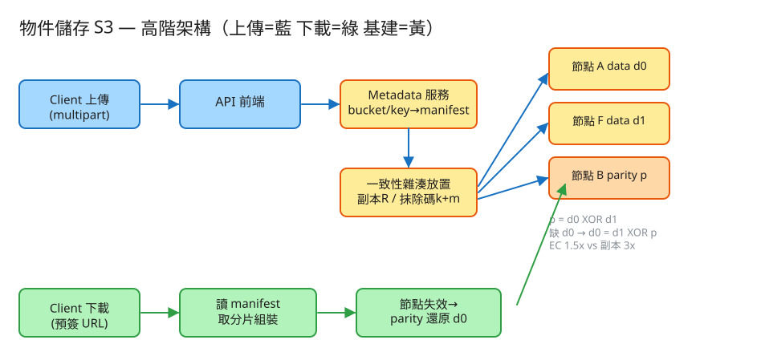

K 分散式系統 建議 48 分鐘 Design an Object Storage System (S3)
bucket/key 存取任意位元組（圖片、影片、備份、日誌）。key 就是一整段字串（a/b/c.jpg 只是看起來像路徑，用 prefix 列舉模擬「資料夾」）。| 指標 | 假設 | 推算 |
|---|---|---|
| 物件數 | 10 億用戶 × 平均 1000 物件 | ~1 兆物件 → metadata 是巨量 KV |
| 平均物件大小 | 混合大小，均值 ~1 MB | 原始資料 ~1 EB |
| 冗餘後實佔 | 抹除碼 RS(10,4) ≈ 1.4x | ~1.4 EB（若用 3 副本則 3 EB） |
| 寫入 | 1000 萬上傳/分 | ~167k 寫 QPS（峰值更高） |
| metadata 每筆 | ~1 KB（key、size、etag、分片放置） | 1 兆 × 1KB ≈ 1 PB metadata → 必須分片 |
| 分片大小 | 一個物件切成固定大小 chunk（如 4–64 MB） | 大物件 = 多 chunk，每 chunk 各自冗餘放置 |
# 建立 bucket
PUT /{bucket}
# 單次上傳（小物件）
PUT /{bucket}/{key} Body: <bytes> → 200 ETag: "<md5>"
# 下載
GET /{bucket}/{key} → 200 <bytes>（含 ETag、Content-Length）
# 列舉（扁平 + prefix 模擬資料夾）
GET /{bucket}?prefix=photos/&delimiter=/&max-keys=1000
# 分段上傳 multipart（大物件）
POST /{bucket}/{key}?uploads → { uploadId }
PUT /{bucket}/{key}?partNumber=N&uploadId=.. → 200 ETag(該 part)
POST /{bucket}/{key}?uploadId=.. (complete) → 組裝；回整體 ETag
# 預簽 URL（無金鑰、有時效）
GET /{bucket}/{key}?X-Expires=...&X-Signature=hmac(...)
# 刪除
DELETE /{bucket}/{key}
md5(內容)；multipart 的 ETag = md5(各 part md5 的 binary 串接)-<part 數>（後綴 part 數）。所以看 ETag 結尾有沒有 -N 就知道是不是分段上傳的——這是 S3 真實行為，Demo 也照做。bucket
name PRIMARY KEY
owner, region, created_at, policy
object_manifest (metadata 服務，分片式強一致 KV：key = bucket/key)
bucket, key
size, etag, crc32
strategy 'REPLICA' | 'EC'
parts[] { partNumber, etag(md5), size }
placement -- 分片/副本落在哪些儲存節點
REPLICA: [ {replica, node, blockId} x R ]
EC: { k, m, blocks:[ {shard, role:data|parity, node, blockId} ] }
version_id, created_at
儲存節點上的 block（資料平面，append-only、不可變）
blockId → bytes（一個副本或一個抹除碼分片）
✏️ 用 Excalidraw 開啟編輯（diagram.excalidraw） 上傳(multipart)
Client ───▶ API 前端 ───▶ Metadata 服務(bucket/key→manifest, 強一致)
│
▼
一致性雜湊放置 ──▶ 儲存節點群
│ ├─ 副本 R 份 或
│ └─ 抹除碼 k 資料 + m parity
Client ◀─── API 前端 ◀─── 讀 manifest → 取分片 → 組裝/還原（節點失效用 parity）
下載(預簽 URL)大檔不該一次 PUT：網路一斷就全廢。流程：init 拿 uploadId → 各 part 獨立並行 PUT（可重試單一 part）→ complete 把 part 依序組裝成物件並算整體 ETag。好處：並行加速、斷點續傳、單 part 失敗只重傳該 part。
分片要放哪些節點？用 一致性雜湊環：節點（含虛擬節點）雜湊到環上，分片 key 雜湊後順時針找前 N 個不同實體節點。好處：加/退節點只重分配 1/N 的資料，不像 hash % N 全洗牌。放置時還要避開同一故障域（同機架/同 AZ），確保一次故障不會同時帶走太多冗餘。
| 方式 | 原理 | 空間倍率 | 容忍遺失 | 還原成本 |
|---|---|---|---|---|
| 副本 REPLICA | 整顆物件複製 R 份 | R（如 3.0x） | R−1 份 | 低（直接讀另一份） |
| 抹除碼 EC | k 資料分片 + m parity（RS 編碼） | (k+m)/k（如 RS(10,4)=1.4x） | m 份 | 高（要計算還原） |
抹除碼用更少空間換到相近甚至更高的耐久度，代價是還原與小檔讀取要算、要拉多個分片。實務：冷資料/大物件用 EC（省錢），熱資料/小物件可用副本（讀延遲低）。最簡單的 EC 是 m=1 的 XOR parity：p = d0 XOR d1，缺任一資料片就 d0 = d1 XOR p 補回——Demo 就用這個讓你親眼看到還原。
「上傳完馬上能讀到」（read-after-write）要求 manifest 寫入強一致。常見做法：metadata 放支援交易/條件寫的分片式 KV，complete 是一次原子提交；資料 block 先寫好、冗餘達標後才提交 manifest，避免 manifest 指向還沒寫完的 block。
第三方（瀏覽器、合作夥伴）要直接上傳/下載，但不能給金鑰。伺服器用 HMAC(method, bucket, key, expires, secret) 簽出一個 URL。對方拿著用，伺服器重算 HMAC 比對（hash_equals）+ 檢查未過期才放行。竄改任何欄位或過期 → 簽章不符 → 403。Demo 完整實作。
| 瓶頸 | 症狀 | 對策 |
|---|---|---|
| 小檔過多 | 每個物件一條 manifest + 多次磁碟 seek，metadata 與 IOPS 雙爆 | 小物件打包進大 chunk（packing）、提高 metadata 快取、鼓勵客戶端合併 |
| metadata 熱點 | 同 prefix 的 key 落同分片、熱門 bucket 壓垮單一分片 | 對 key 雜湊分片（非字典序）、熱 key 加快取、自動分裂(split)熱分片 |
| 跨區複製 | 單區故障要能容災、就近讀取 | 非同步跨區複製（CRR）；接受跨區最終一致，區內強一致 |
| 修復風暴 | 一台機器掛掉觸發大量 repair，吃滿頻寬 | 節流 repair、分散冗餘到多故障域降低單機影響面 |
| 大物件吞吐 | 單連線拉不滿頻寬 | multipart 並行 + 分片散在多節點 → 並行讀 |
本題 demo 著重物件儲存真正的考點，可實際用 PHP 內建伺服器跑起來：
src/Erasure.php 抹除碼教學版：k=2 資料 + m=1 XOR parity（p=d0 XOR d1），缺一片用 XOR 還原；對照「副本 3x vs 抹除碼 1.5x」空間取捨。src/ObjectStore.php multipart（init/part/complete + ETag）、一致性雜湊放置、副本/抹除碼存放、metadata（flock 序列化讀改寫＝強一致）、節點失效還原、預簽 URL（hash_hmac）。public/index.php 路由 + 測試頁：建 bucket、一鍵 multipart 上傳、看分片落在哪些節點、製造節點失效後下載並用 parity/副本還原比對 crc32、產生並驗證預簽 URL。# 啟動
cd demo
php -S localhost:8033 -t public
# 瀏覽器開 http://localhost:8033：上傳 → 製造節點失效 → 下載看還原 → 預簽 URLdata/nodes/ 下的子目錄模擬儲存節點，沒有真正的網路、分散式協調、背景 repair 或 Reed-Solomon 有限體運算（XOR parity 只容忍 m=1）。
但 multipart 組裝與 ETag、一致性雜湊放置、抹除碼編碼/還原、副本容錯讀取、metadata 強一致（flock）、預簽 URL 的 HMAC 簽章與過期驗證 皆為真實可執行——這些正是面試考點。所有共享狀態寫入用 flock 保護。